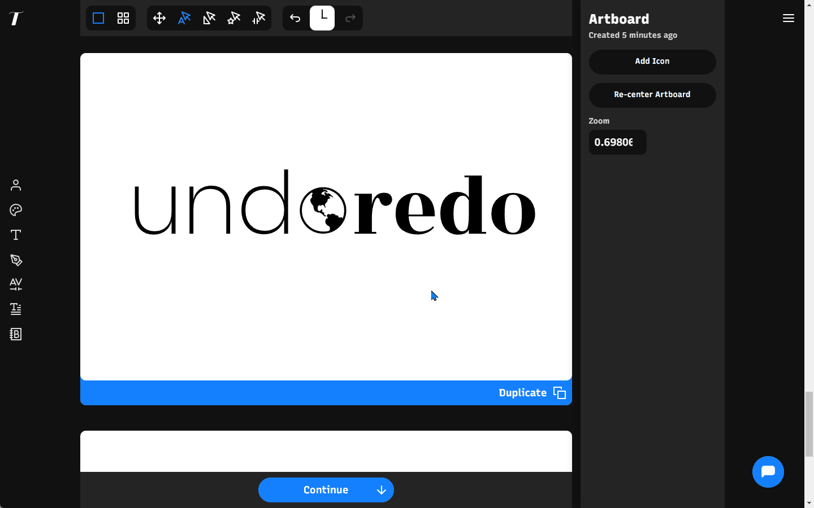

From MVP to Alpha Launch: Typogram’s Product Development Process
Scrappy Ways to Product validation
In this post, I want to highlight details regarding Typogram’s product development process, especially how we place users at the center of our design process to create and validate features for our design tool.
- The Problem → Context & Background
- Assumptions → Questions We Are Trying to Answer
- Round 1 → MVP User Testing • Learnings & Results
- Round 2 → Alpha Pre-Order • Learnings & Results
- Round 3 → Alpha Public Launch • Learnings & Results
Context/ Background
Their Pain points
- Pro tools (Adobe, Figma) geared toward design professionals are hard to use
- Beginner-friendly tools (Canva) are geared toward marketing but not exclusively toward logo creation
- Not satisfied with the results created by the freelancer platform /marketplace (high cost from time and communication)
Our Assumptions
- Early-stage entrepreneurs want to design their logos if they had adequate help and knowledge
-
They lack a beginner-friendly tool, exclusively for logo and brand design
- Current design tools are either too advanced, with way too many design features, or lack sufficient features for logo design
- Early-stage entrepreneurs are willing to learn about design and branding
Questions We Are Trying to Answer
- What features can we build to test these assumptions?
- What do they look and behave like?
Sitting on these ideas, my team narrowed down to several features:
- Easily digestible in-app learning materials
- Curated logo methods simplify logo creation
- Curated logo typeface selection
Typogram app flow
MVP User Testing Workshop
- If they ever tried designing, what has their experience with design software been?
- What is their current way of acquiring branding design for their business, and what / how is that process for them?
- What is their technical proficiency?
- If they have designed their logos, what software did they use?
App flow in paper prototype
Our User Personas
After 20+ in-person user testing workshops, two types of user personas emerged:
- Early-stage entrepreneur who identifies as creative and enjoy designing, learning, and getting their hands dirty in the process
- Early-stage entrepreneur who identifies as tech savvy and may already be familiar with specific existing design software, who likes to tinker and build
Results & Learnings
After talking to customers, here is what we learned:
- Powerpoint is a popular tool for non-designers to design
- Non-designers need encouragement and confidence when designing
- Non-designers need the most help/assurance in font selection
- Bézier curves are complex for non-designers
- Most people found value in the learning materials
- Entrepreneurs like to get opinions from their team members during branding and designing
MVP User Testing Workshop
- Where did you find Typogram?
- What spiked your interest to pre-order Typogram?
- What’s your current process to create logo and brand design?
- Do you plan to use Typogram to create your own brand, or for clients? What type of license do you need?
- Do you have a feature request or a few for Typogram? What can we do to better help you succeed?

Typogram's Pre-order Product Hunt launch
The Icon Swap logo design method inside Typogram
This additional interview helps us understand their journey of finding us (and validate if our messaging is working), their backgrounds, current processes in logo design, and design pain points. It uncovers additional needs and adds new insights to what worked in the launch and marketing strategy.
Results & Learnings
After talking to customers, here is what we learned:
- A new type of customer emerged: small web agencies buying multiple licenses, signaling the potential for a new pricing opportunity
- Most of our new customers are small business owners or creators, and tech-savvy, validating our user personas
- Many of our customers came from our content or engineering as marketing projects, validating our marketing strategy
- Customers who are non-designers are attracted to the messaging of branding, learning, and feeling creative as long as we have the features to make that process easy.
Software Alpha Release User Testing Feedback
The primary goal of the questionnaire is to collect what is missing and what customers like and don’t like about the alpha. Additionally, we set up a discord community to support announcement, feedback, and bug reporting processes and make it easy to share work in progress. This way, we always stay close to the users we are designing for.
Product hunt launch - public alpha
We added the undo feature (a popular request) after this launch
Results & Learnings
After talking to customers, here is what we learned:
- Identified several missing key product features, like undo and redo design actions
- Identified missing ux features, like tooltips, to help users better navigate through the product
- Customers need more support for more advanced design features of the app. We implemented additional resources, like the help center blog and in-app tutorial videos, to better guide through using our design tool.